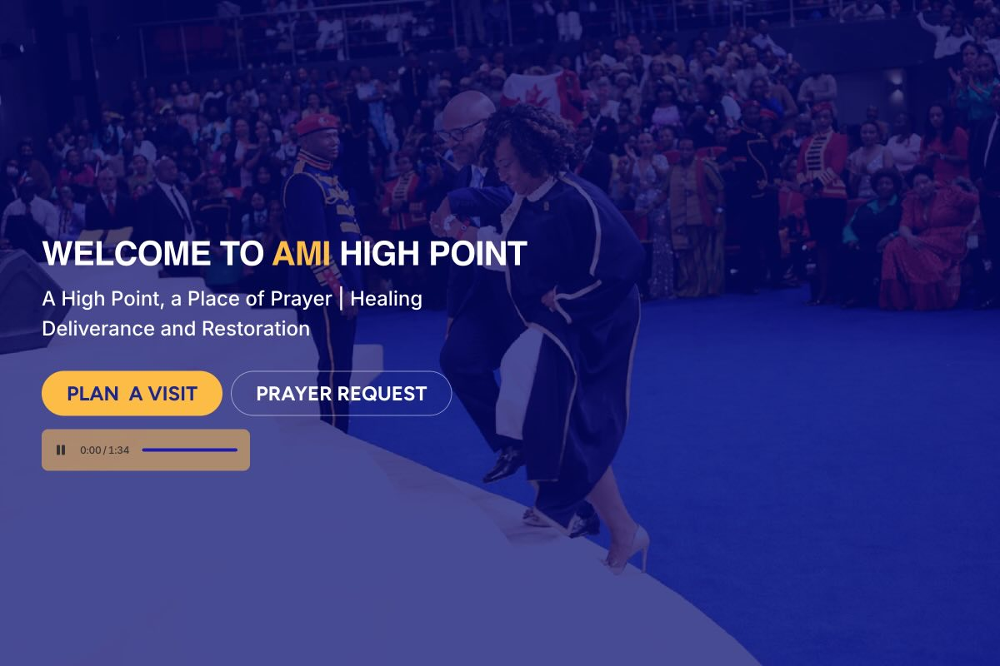

Global organization
AMI Global
Role: Web Producer / Digital Experience
Reworked the web experience to support clearer content, stronger calls to action, responsive delivery, and easier ongoing site management.
Outcome status: Donation-performance result requires verification before publication.
View AMI Global case study